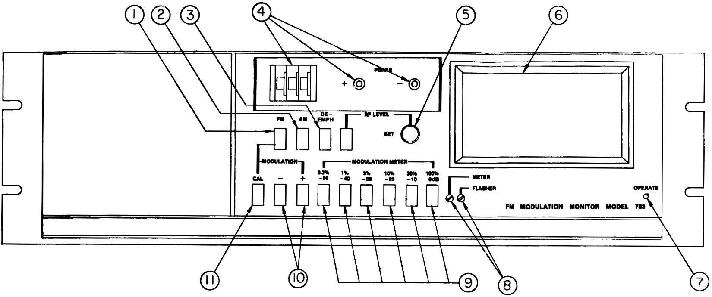
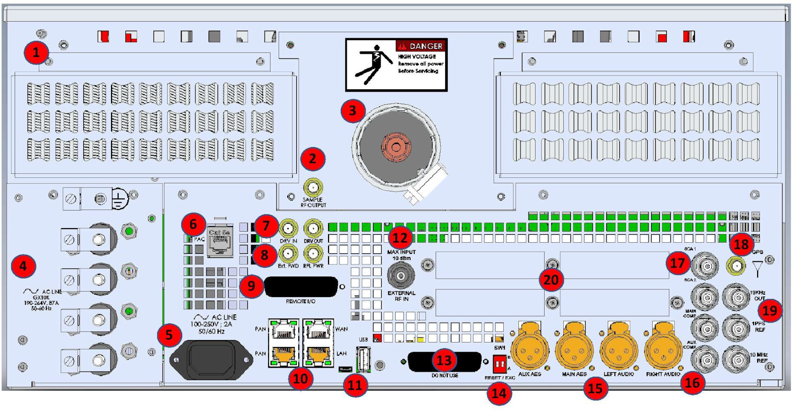
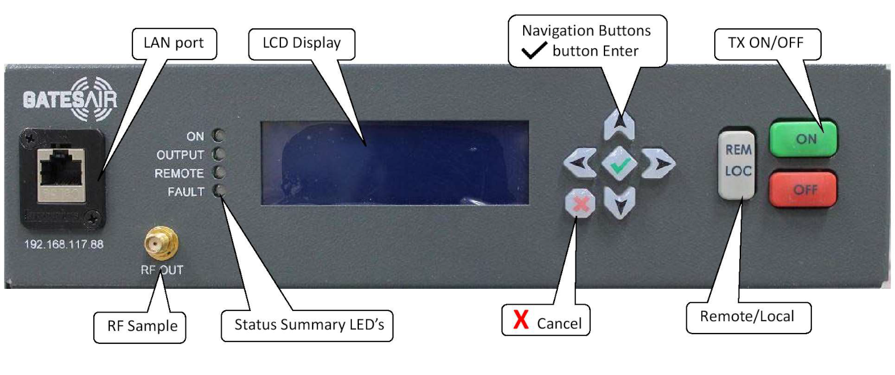
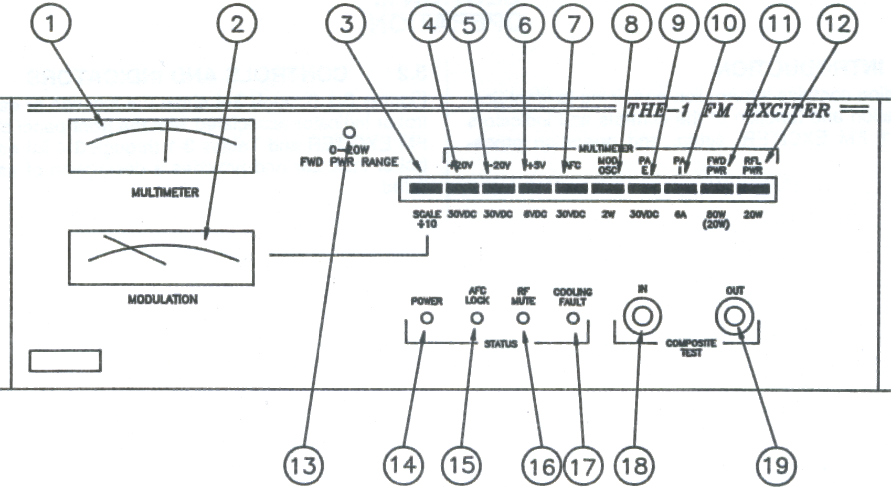

12.E. The Transmitter
The equipment in the following chapter is located either in the transmitter room on the fifth floor of the Science building or on WMUL‑FM’s tower atop the Science building.
WMUL‑FM uses a GatesAir Flexiva GX 5 kW transmitter, driven from an Orban Optimod-FM 8500 FM Digital Audio Processor.
12.E.1. GatesAir Flexiva GX 5 kW Transmitter
The GatesAir Flexiva GX 5 kW broadcast transmitter is a 5,500 watt FM transmitter designed for continuous broadcast operation. It is frequency-agile across the FM Broadcast Band (87.5 to 107.9 MHz). WMUL‑FM’s transmitter is configured to operate at 88.1 MHz.
The GatesAir Flexiva GX 5 kW broadcast transmitter can provide any output power from 500 to 5,500 watts. This power range provides WMUL‑FM with the ample power to meet it’s authorized Effective radiated power. The Federal Communications Commission has authorized WMUL‑FM to operate at 1,400 watts effective radiated power (ERP). In order to achieve that effective radiated power, WMUL‑FM’s transmitter must drive the transmission line and antenna with 3,230 watts.
The transmitter can be configured to receive AC power in either single-phase between 190 and 264 volts or three-phase between 330 and 460 volts. WMUL‑FM is using single-phase power at 208 volts.
The power supply and power amplifier sections of the transmitter are modular, with three (3) power supply units and four (4) power amplifier units. This modularity allows the transmitter to continue functioning even when one or more of those modules have failed. The transmitter is capable of continuing to operate at reduced power with one failed power supply and up to three failed power amplifier modules.
Each power amplifier module provides 1,375 watts of the transmitter’s 5,500 watt capability. Because WMUL‑FM only requires 3,230 watts to achieve its authorized effective radiated power, WMUL‑FM can run at full legal power even if one of the power amplifier modules has failed and at 85% of its legal power with two failed power amplifier modules.
The failure of more than one power supply will render the transmitter inoperable.
12.E.1.a. Key Features
(From the Flexiva GX 5k Manual)
Each Flexiva GX Transmitter features:
-
Integrated Direct to Channel Digital FM modulator includes Stereo Encoder Auto-switching analog L/R (2), AES-EBU audio (2) and composite (2) inputs, Two (2) SCA baseband inputs, Ext. 10 MHz and 1 PPS inputs
-
AES3 audio or Composite/MPX inputs over AES 192
-
Internal harmonic filter
-
Internal auto switching of Primary and Backup Sources
-
External RF Source
-
Proportional VSWR fold-back for safe operation at reduced power into marginal loads (icy antenna, etc)
-
RF ramp-up to minimize turn-on transients
-
Air filter serviceable while transmitter is in operation
-
Meets or exceeds all applicable FCC, Industry Canada, CCIR and IEC215 standards, RoHS compliant
-
Front panel control and metering.
-
Built-in parallel interface for remote control, status and metering; RFI and transient protected.
-
RF directional couplers for system protection and RF sample ports for customer use.
-
Automatic restart after AC mains interruption; returns to previous operational mode.
-
Web GUI for use in remote diagnostics using customer’s PC.
-
SNMP for basic network control and monitoring
12.E.2. Harris THE-1 FM Exciter
The Harris THE-1 FM Exciter was a component of WMUL‑FM’s previous transmitter. When operated as a stand-alone transmitter the THE-1 is capable of generating a 55 watts power output, frequency modulated signal into a 50 ohm load on 88.1 MHz in the FM Broadcast Band. The THE-1 is designed to operate as an exciter for an FM transmitter or as a stand alone transmitter complete with all necessary local and remote metering, and sample RF necessary for transmitter operation.
It is kept as an emergency backup in case the main transmitter were to fail.
12.E.3. Orban Optimod-FM 8500 FM Digital Audio Processor
The Orban Optimod-FM 8500 FM Digital Audio Processor was designed to deliver a high quality sound while simultaneously increasing the average modulation of the channel substantially beyond that achievable by "recording studio"-style compressors and limiters.
Among its features are: (Adapted from the Optimod-FM 8500 manual)
-
The 8500 achieves extremely tight peak control at all its outputs: analog, AES3, and composite baseband.
-
By integrating the stereo encoder with the audio processing, the 8500 eliminates the overshoot problems that waste valuable modulation in traditional external encoders.
-
The 8500 prevents aliasing distortion in subsequent stereo encoders or transmission links by providing bandwidth limiting and overshoot compensated 15 kHz low-pass filters ahead of the 8500’s audio outputs and stereo encoder.
-
The 8500 has an internal, DSP-based stereo encoder (with a patented "half-cosine interpolation" composite limiter operating at 512 kHz sample rate) to generate the pilot tone stereo baseband signal and control its peak level. The composite limiter is a unique, "you can only do this in DSP" process that beats composite clippers by preserving stereo imaging while fully protecting the stereo pilot tone, RDS/RBDS, and subcarriers.
-
The OPTIMOD-FM 8500 is supplied with analog and AES3 digital inputs and outputs. The digital input and the two digital outputs are equipped with sample-rate converters and can operate at 32 kHz, 44.1 kHz, 48 kHz, 88.2 kHz, and 96 kHz sample rates. (44.1 kHz or higher is recommended for best peak control.) The pre-emphasis status and output levels are separately adjustable for the analog and digital outputs. Each output can emit the analog FM processed signal, the digital radio processed signal, or the low-delay monitor signal.
-
The 8500 precisely controls the audio bandwidth of its analog FM processing to 16.5 kHz. This prevents interference to the pilot tone and RDS (or RBDS) subcarrier.
-
The 8500 can increase the density and loudness of the program material by multiband compression, limiting, and clipping: improving the consistency of the station’s sound and increasing loudness and definition remarkably, without producing unpleasant side effects.
-
The 8500 rides gain over an adjustable range of up to 25 dB, compressing dynamic range and compensating for both operator gain-riding errors and gain inconsistencies in automated systems.
12.E.4. Inovonics David III FM Processor
The Inovonics David III FM Processor was used prior to WMUL‑FM acquiring the Optimod-FM 8500. It is retained as a backup.
The Inovonics 718 David III FM Broadcast Processor is an integrated signal processing system which replaces conventional compressors, limiters, clippers, and stereo generators. Briefly, the David III performs the following functions (from the user manual):
-
Comprehensive PWM audio processing with gain-riding AGC, three bands of compression and limiting, and adjustable bass and brilliance EQ.
-
Inovonics' unique Polarity-Independent Peak Processing final limiter, which assures full carrier modulation with all types of program material.
-
A stereo-generator section that utilizes digital synthesis techniques for best stereo separation and rock-stable operation.
-
A built-in, user-adjustable composite clipper
12.E.5. Transmitter Room Modulation Monitor
The TFT 763 FM modulation monitor is a special receiver in the transmitter room that samples the transmitted signals. It provides a meter that indicates the modulation percentage of the composite audio signal.

To activate the monitor, three buttons — the FM button, the 100% / 0dB button, and the positive peak, or negative peak button — should be pushed in. The peak button can be used on positive or negative, and it does not matter which one is being used.
This monitor has two meters: a smaller receiver meter on the left hand side (unlabeled) and the larger modulation monitor meter on the right hand side (6).
The smaller meter on the left tells the engineers that the transmitter carrier is being received. It reads in the white area of the meter.
The larger meter on the right tells the engineers the average program modulation percentage. Modulation percentage is the loudness of the audio signal being transmitted. The maximum modulation permitted is 105 percent.
The positive and negative lights (4) tell the engineers that peaks are above 105 percent when they light up.
To the left of these little positive and negative lights is a thumb-wheel switch with three numbers on it (also 4). The switch should always read 105 percent.
The FCC requires radio stations to maintain their audio volume peaks at a specified level. It defines the loudest distortion-free audio signal level as 100 percent total modulation. WMUL‑FM’s RDS sub-carrier grants an additional 5 percent total modulation. The rule dictates that all stations must maintain volume peaks between 85 percent and 100 percent modulation as measured at the transmitter.
The big modulation level meter (6) should be kept as high as possible with the peak lights coming on as infrequently as possible during the transmission of any program material. This holds true for the Inovonics 531 Modulation Analyzer located in Studio A as well.
12.E.6. GatesAir Flexiva GX 5 kW Transmitter Diagram — Rear Panel

-
Safety Ground.
-
RF Sample Output — Rear panel connection for modulation monitors or other test equipment.
-
RF Output — 1 5/8" Unflanged EIA RF Output connector.
-
AC Line Input — Configurable for Single Phase or Three Phase operation for the RF section.
-
Single Phase AC Connection — For the control section.
-
PA Controller (PAC) — For connection to the PBC (Power Block Controller) Area Network (PAN).
-
Drive in/Out — Not used.
-
Ext. Power/Reflected Power — Not used.
-
Remote IO — Dedicated DB-25 type connector provides standard interfacing for transmitter control system connection.
-
Ethernet Port — Rear RJ45 connector provides fully configurable 100Base-T Ethernet for LAN/WAN connectivity and for the Power Block Controller (PBC) Area Network (PAN).
-
USB/Micro USB Connection — Not used.
-
Dual-Drive Input — External, low-level digital modulator. Automatic failover switching.
-
Modulator Interlock — For Interlock Purposes ONLY.
-
SW1 — Left section resets modulator back to factory default state. Right section — do not change.
-
Program Audio Inputs — 2)AES-EBU, 1)L/R Analog. Configurable as part of auto-fail-over switching MUX.
-
Program Composite (MPX) Inputs — 2) Composite baseband inputs. Configurable as part of auto-fail-over switching MUX.
-
Aux Composite (SCA/RDS/RBDS) Inputs — 2) Baseband inputs for SCA and/or RDS/RBDS.
-
GPS Receiver Antenna — Optional high-quality integrated GPS receiver provides ultra-accurate reference for seamless SFN operation and reduces installation costs and space.
-
External Reference Input/Output — Support for single frequency networks (SFNs). Supports both 10MHZ and 1 PPS inputs.
-
Expansion slots for audio processing card, ILP-100e card and future use.
12.E.7. GatesAir Flexiva GX 5 kW Transmitter Diagram — Front Panel

Front Panel Control Buttons:
-
UP/DOWN/LEFT/RIGHT: Used for LCD menu navigation. The up and down buttons are used to move the arrow cursor, which indicates the menu line that will be activated by pressing the black enter button. The left button is primarily used as a back button to return to a previous menu selection.
-
ENTER: The green check mark in the center of the UP/DOWN/LEFT/RIGHT buttons is used to select, expand or approve a selected value.
-
EXIT/CANCEL: The red X is used to reject or cancel a selected item. Also serves as an exit button to exit an LCD menu page and return to the next highest level in the LCD menu tree.
-
REMOTE LOCAL: Toggles from Remote to Local control. the Current status is visible on the LED status to the left. Includes parallel, IP, SNMP.
-
ON: (Green Button) Switches the transmitter ON.
-
OFF: (Red Button) Switches the transmitter OFF.
Front Panel Status LEDs:
ON |
[Green] = indicates that the transmitter is switched on. |
OUTPUT |
[Green] = indicates that the transmitter is switched on and the RF output level is greater than the Forward Low
Warning threshold set. |
REMOTE |
[Green] = indicates that the transmitter remote control interface has been activated. Local front panel control may
or may not be locked out depending on the status of the Dis In Rem (disable in remote) field. |
FAULT |
[Green] = indicates that the transmitter is switched on and no alarms have been detected. |
12.E.8. Harris THE-1 FM Exciter Diagram

-
Multimeter: Displays voltage, current, or power as selected by the multimeter switch.
-
Modulation Meter: Displays the total composite modulation signal as measured at the input of the VCO in the modulated oscillator. This signal will be the sum of the Composite inputs and SCA inputs or mono input and SCA inputs.
-
Modulation Scale Divide by 10: When depressed, the modulation meter full-scale indication is divide by 10. Thus a 100 percent indication when the button is depressed equals 10 percent actual.
-
+20V Multimeter Switch: Measures the pre-regulated +20 volt DC bus to all module power supply regulators.
-
-20V Multimeter Switch: Measures the pre-regulated -20 volt DC bus to all module power supply regulators.
-
+5V Multimeter Switch: Measures the regulated +5 volt DC supply to the motherboard and AFC module.
-
AFC Voltage Multimeter Switch: Measures the AFC / PLL module AFC voltage to the modulated oscillator module.
-
Mod OSC Multimeter Switch: Measures the RF output of the modulated oscillator module.
-
PAE Multimeter Switch: Measures the regulated power supply voltage to the RF amplifier module A1.
-
PAI Multimeter Switch: Measures the RF amplifier supply current.
-
FWD PWR Multimeter Switch: Measures the forward power output from the exciter.
-
RFL PWR Multimeter Switch: Measures the exciter reflected power.
-
0-20W FWD PWR Range Indicator: Illuminated to indicate that the FWD PWR multimeter indication should be read on the 0-20W scale. (Green Scale).
-
Power Indicator: Indicates that the exciter main AC power has been applied and the power supplies are active.
-
AFC Lock Indicator: Illuminates to indicate that the AFC / PLL module is locked to the preset carrier frequency.
-
RF Mute Indicator: Illuminates to indicate that the exciter RF output power has been turned off due to an external RF Mute command, AFC unlock condition, or a Cooling Fault (optional).
-
Cooling Fault Indicator: Illuminates to indicate that an internal exciter temperature has exceeded the upper allowable limit.
-
Composite Test Input: A 10kΩ balanced input to the modulated oscillator for test signal injection. This is a fully functional composite input and can be used in the same manner as the rear inputs.
-
Composite Test Output: A buffered low impedance (1 Vrms at ± 75 kHz deviation) output of the total composite signal as sampled from the input to the VCO in the modulated oscillator module.